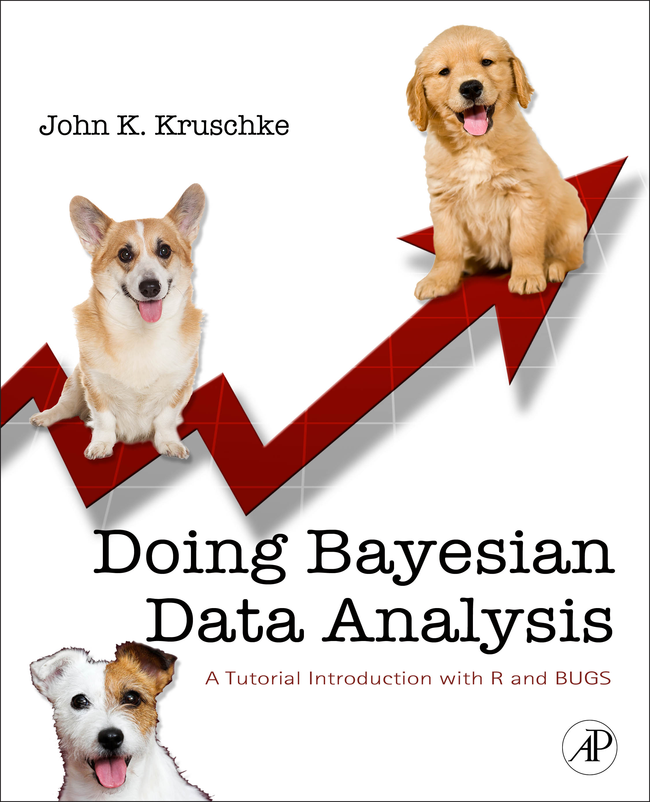

Bayesian Data Analysis, FAA Human Factors R&D Lab 2013
Doing Bayesian Data Analysis at the FAA Human Factors R&D Lab
Atlantic City, NJ
Introductory Talk: Thursday, Feb. 28, 9:00am-10:30am
Workshop: Thursday, Feb. 28, 11:00am-4:30pm,
and Friday Mar. 1, 9:00am-4:30pm
2013
Figure 1. Why you should attend the workshop. (Notice that the Bayesian analysis reveals many credible regression lines, for which the slopes and intercepts trade off, instead of just one "best" line.)
Introductory Talk: Thursday, Feb. 28, 9:00am-10:30am.
Many fields of science are transitioning from null hypothesis significance testing (NHST) to Bayesian data analysis. Bayesian analysis provides complete information about the relative credibilities of all parameter values for any descriptive model of the data. In NHST, on the other hand, p values and the limits of confidence intervals depend strongly on the sampling intentions of the analyst, and confidence intervals carry no distributional information and are only minimally useful for predicting new data or assessing statistical power. Bayesian data analysis does not suffer these problems. The issues will be illustrated in the context of familiar t tests for comparing two groups. Bayesian analysis applies flexibly and seamlessly to complex models and realistic data, including small samples, large samples, unbalanced designs, missing data, censored data, outliers, etc. Bayesian analysis software is flexible and can be used for a wide variety of data-analytic models. And it's free.
Workshop: Thursday, Feb. 28, 11:00-12:00 presentation, 12:00-1:30 lunch, 1:30-2:50 presentation, 2:50-3:10 break, 3:10-4:30 presentation; Friday Mar. 1, 9:00am-10:20 presentation, 10:20-10:40 break, 10:40-12:00 presentation, 12:00-1:30 lunch, 1:30-2:50 presentation, 2:50-3:10 break, 3:10-4:30 presentation.
The workshop shows you how to do Bayesian data analysis, hands on, with free software called R and JAGS. (Installation instructions are shown below.) The intended audience is researchers who want a ground-floor introduction to Bayesian data analysis. No specific mathematical or statistical expertise is presumed. Topics include the following: Bayesian reasoning generally. Robust Bayesian estimation of differences between two groups. Decision rules and null values. Markov Chain Monte Carlo and JAGS. Hierarchical models: Estimates of means at individual and group levels. Shrinkage. Bayesian hierarchical ANOVA. Multiple comparisons and shrinkage. Example with unequal variances. Bayesian linear and logistic regression. Overview of within-subject models and power analysis.
Who may attend: The talk and workshop are available to members of the FAA Tech Center, FAA Headquarters, and Human Factors Lab researchers and contractors. Other interested persons should contact Dr. Ulf Ahlstrom at 609-485-8642.
!
Install Software Before Arriving:
If you bring a notebook computer you may try running the data analyses as they are presented. Before arriving at the workshop, please install the software, all of which is free. For complete installation instructions, please refer to this blog entry. Also be sure to get the additional programs from this site, which also has links to videos.
Why go Bayesian?See Figure 1, above. But beyond that, sciences from astronomy to zoology are changing from 20th-century null-hypothesis significance testing to Bayesian data analysis, because Bayesian analysis provides rich information with flexible application to numerous models. Read more:
An article that shows the rich information provided by Bayesian estimation in the context of analyzing data from two groups.
An article that explains a critical flaw of p-values in null hypothesis significance testing, and two different Bayesian approaches to assessing null values.
An article that emphasizes advantages of Bayesian data analysis and the fact that Bayesian data analysis is appropriate regardless of the status of Bayesian models of cognition.
*Your click on this link constitutes your request to the author for a personal copy of the article exclusively for individual research.

Who is the instructor?John Kruschke is seven-time winner of Teaching Excellence Recognition Awards from Indiana University, where he is Professor of Psychological and Brain Sciences, and Adjunct Professor of Statistics. He has written an introductory textbook on Bayesian data analysis; see also the articles linked above. His research interests include the science of moral judgment, applications of Bayesian methods to teaching and learning, and models of attention in learning, which he has developed in both connectionist and Bayesian formalisms. He received the Troland Research Award from the National Academy of Sciences. He is a Fellow of the Society of Experimental Psychologists and a Fellow of the Association for Psychological Science. He is action editor for the Journal of Mathematical Psychology, and is on the editorial boards of Psychological Review, the Journal of Experimental Psychology: General, among others.
Recommended textbook:Doing Bayesian Data Analysis: A Tutorial with R and BUGS. The book is a genuinely accessible, tutorial introduction to doing Bayesian data analysis. See some published reviews of the book here. Other endorsements and information about the book can be read here.
Bayesian data analysis is not Bayesian modeling of
cognition. Data analysis involves "generic" descriptive models
(such as linear regression) without any necessary interpretation as
cognitive computation. The rational way to estimate parameters in
descriptive models is Bayesian, regardless of whether or not Bayesian
models of mind are viable. The concepts and methods of Bayesian data
analysis transfer to other Bayesian models, including Bayesian models
of cognition. Read more at this blog entry.
This page URL:
http://www.indiana.edu/~jkkteach/WorkshopFAA2013.html